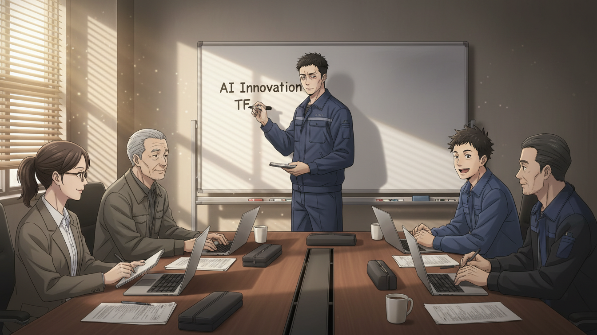
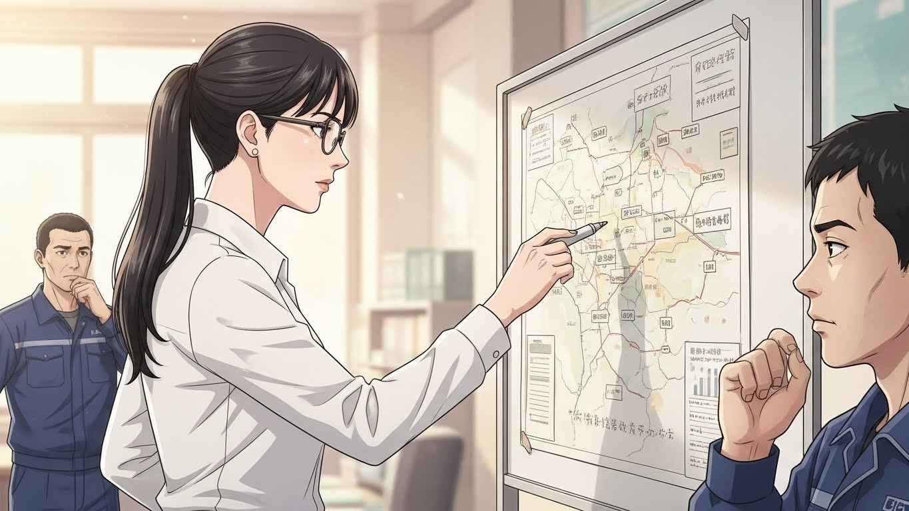

📦 Do, 85% - CJ대한통운 AI 도입 생존기
Episode 11: Week 1-2, 전투 준비
👥 TF의 출범

12월 9일 월요일, 오전 9시 - 본사 13층 AI 혁신 TF실
빈 사무실이었던 곳이 이제 채워지고 있었다.
책상 7개. 의자 7개. 그리고 화이트보드.
도진이 제일 먼저 도착했다. 6시 50분. 1시간 10분 일찍 왔다. 핸드폰에서 어젯밤 준비한 파일을 열었다. kickoff_agenda.md. Claude와 함께 만든 첫 회의 아젠다. 읽고 또 읽었다.
오전 9시 정각
문이 열렸다. 서윤이 들어왔다. 손에 노트북과 커피 두 잔.
"팀장님, 커피요."
"고마워요."
도진이 커피를 받았다. 따뜻했다.
"긴장되죠?"
"네... 엄청."
"저도요."
서윤이 웃었다.
문이 다시 열렸다. 김택배가 들어왔다. 작업복 차림. 곤지암에서 왔다.
"도진아, 축하한다. 팀장."
"형님, 고맙습니다."
"근데 나 여기서 뭐 하면 돼?"
"형님은 우리 현장 멘토예요. 제일 중요한 사람."
"그래? 뭐, 할 수 있는 거 하지."
김택배가 책상에 앉았다.
9시 5분. 문이 또 열렸다. 이번엔 세 명이 함께.
첫 번째, 30대 중반 남자. 작업복. 햇볕에 그을린 피부.
"안녕하세요. 부산센터 박민재입니다."
두 번째, 30대 초반 남자. 작업복. 밝은 표정.
"대구센터 강태양입니다! 잘 부탁드려요!"
세 번째, 30대 초반 여자. 작업복. 차분한 인상.
"인천센터 이소라입니다."
도진이 일어나 악수했다.
"최도진입니다. 팀장... 맡게 됐습니다."
9시 8분. 마지막 두 명이 들어왔다.
"IT팀 정수민입니다!"
25살. 어려 보이는 얼굴. 노트북 배낭.
"데이터분석팀 한지우입니다."
28살. 긴 머리를 높게 묶었다. 얇은 안경.
7명이 모였다.
도진이 화이트보드 앞에 섰다.
"시작하겠습니다."
🎯 목표와 현실
오전 9시 15분
도진이 마커를 들었다.
"저는... 처음 팀장 해봅니다."
솔직한 고백이었다.
"그래서 잘 모릅니다. 어떻게 해야 할지."
팀원들이 조용히 들었다.
"하지만 우리가 함께 만들어가면 된다고 생각합니다."
도진이 화이트보드에 썼다.
화이트보드 메모:
목표: 12개 센터 전부 85% 달성
"불가능해 보이죠?"
강태양이 손을 들었다.
"질문이요! 85%가 정확히 뭐예요?"
"배송완료율입니다. 당일 배송 건수 대비 실제 완료 건수."
서윤이 답했다.
"85%면 100건 중 85건 완료. 현재 전국 평균은 78%입니다."
한지우가 노트북을 열었다.
"데이터상으로 센터별 차이가 큽니다."
화면을 돌려 보여줬다.
| 센터 | 현재 효율 | 목표 | 격차 |
|---|---|---|---|
| 인천 | 76% | 85% | +9%p |
| 부천 | 80% | 85% | +5%p |
| 안양 | 82% | 85% | +3%p |
| 대구 | 79% | 85% | +6%p |
| 부산 | 77% | 85% | +8%p |
박민재가 물었다.
"부평은요?"
"부평은 이미 89%입니다. 도진 팀장님과 서윤 PM이 3개월간 만든 시스템이 돌아가고 있어요."
"그럼 우리가 그걸 다른 센터에?"
"네. 복사가 아니라, 각 센터에 맞게 적용하는 겁니다."
이소라가 말했다.
"인천은 부평보다 1.5배 큽니다. 물동량도 다르고, 작업 방식도 달라요."
"맞아요."
도진이 고개를 끄덕였다.
"그래서 여러분이 필요한 겁니다. 각 지역 전문가."
📅 8주 계획의 구체화
오전 10시
도진이 화이트보드에 타임라인을 그렸다.
- Week 1-2: 준비 (지금)
- Week 3-4: 1차 확산 (인천/부천/안양)
- Week 5-6: 2차 확산 (대전/광주/대구/부산/울산/청주)
- Week 7: 3차 확산 (전주/창원/제주)
- Week 8: 검증 및 보고
"이게 큰 그림입니다. 이제 세부 계획을 만들어야 해요."
서윤이 노트북을 열었다.
"Week 1-2가 제일 중요합니다. 여기서 뭘 준비하느냐에 따라 나머지가 결정돼요."
한지우가 말했다.
"필요한 작업을 나열해볼까요?"
화이트보드에 팀원들이 의견을 쏟아냈다.
Week 1-2 할 일:
- 우선순위 센터 상세 분석 (인천/부천/안양)
- 시스템 점검 및 업그레이드
- 교육 자료 준비
- 센터장 사전 접촉
- 예상 저항 요인 파악
- 팀 역할 분담
김택배가 말했다.
"이거 2주 안에 다 해요?"
"해야죠."
도진이 답했다.
"안 하면 Week 3에 시작할 수 없어요."
강태양이 웃으며 말했다.
"오~ 진짜 빡세네요. 완전 좋은데요!"
분위기가 조금 풀렸다.
👥 역할 분담

오전 11시
서윤이 화이트보드를 지우고 다시 그렸다.
팀 역할 분담
"각자 전문 분야가 있습니다. 그걸 최대한 활용해야 해요."
도진이 하나씩 적었다.
- 최도진 (팀장): 전체 일정 관리, 본부 커뮤니케이션, 최종 의사결정
- 이서윤 (PM): 프로젝트 관리, 기술 총괄, 리소스 조정
- 김택배 (현장 멘토): 현장 작업자 설득, 실무 조언, 교육 지원
- 박민재 (남부권): 부산, 울산, 창원, 광주 / 남부권 센터 조사 및 적용
- 강태양 (중부권): 대구, 대전, 청주 / 중부권 센터 조사 및 적용
- 이소라 (수도권): 인천, 부천, 안양 / 수도권 센터 조사 및 적용 (1차 확산)
- 정수민 (IT): 시스템 개발 및 유지보수, 기술 지원, 오류 대응
- 한지우 (데이터): 센터별 현황 분석, 성과 측정 (KPI), 데이터 대시보드
박민재가 물었다.
"저는 부산이 메인이지만, 울산이랑 창원은 자주 못 가는데요."
"괜찮아요. 주 1회 방문 목표로 하고, 나머지는 원격으로."
서윤이 답했다.
이소라가 손을 들었다.
"인천, 부천, 안양이 1차 확산이면... 제가 제일 먼저 시작하는 거네요."
"네. 부담되죠?"
"아니요. 제가 인천센터 6년 다녔어요. 할 수 있어요."
"고맙습니다."
도진이 안도의 한숨을 쉬었다.
강태양이 말했다.
"우리 팀 진짜 잘 짰네요. 각자 지역 전문가잖아요."
"그게 핵심입니다."
서윤이 말했다.
"현장을 아는 사람이 현장을 바꿔야 해요."
🔍 3개 센터 사전 조사
오후 2시
점심을 먹고 돌아왔다.
이소라가 노트북을 열었다.
"인천, 부천, 안양 센터 현황 정리했습니다."
화면을 공유했다.
인천센터
- 규모: 대형 (부평의 1.5배)
- 인원: 85명
- 현재 효율: 76%
- 특징: 수도권 허브, 물동량 최대
- 센터장: 박강석 (54세, 30년 경력, 보수적)
부천센터
- 규모: 중형
- 인원: 45명
- 현재 효율: 80%
- 특징: 젊은 인력 많음
- 센터장: 이민호 (48세, 15년 경력, 개방적)
안양센터
- 규모: 소형
- 인원: 28명
- 현재 효율: 82%
- 특징: 이미 관심 많음 (부평 성과 들음)
- 센터장: 최수진 (46세, 12년 경력, 적극적)
한지우가 분석을 덧붙였다.
"데이터상으로 보면, 안양이 제일 쉽고, 인천이 제일 어렵습니다."
"그럼 안양부터 하면 안 돼요?"
강태양이 물었다.
도진이 말했다.
"안 됩니다. 인천부터 해야 해요."
"왜요?"
"인천이 허브예요. 인천이 성공하면, 다른 센터들이 '인천도 되는데 우리도'라고 생각해요. 반대면..."
"'인천도 안 되는데 우리가 왜?'가 되는구나."
박민재가 이해했다.
"네. 그래서 제일 어려운 곳부터 해야 합니다."
서윤이 말했다.
"하지만 위험하지 않아요?"
이소라가 물었다.
"위험하죠. 하지만..."
도진이 화이트보드를 봤다.
"우리가 제대로 준비하면 됩니다."
🤖 Claude와의 전략 회의
오후 4시
팀원들이 각자 조사 업무를 시작했다.
도진은 혼자 남아 노트북을 열었다.
Claude.
화면에 대화창이 떴다.
도진이 입력했다.
도진의 프롬프트:
12개 물류센터에 AI 시스템을 확산하려고 합니다.
첫 번째 대상: 인천, 부천, 안양 센터 (Week 3-4)
인천센터 특징:
- 85명 규모, 수도권 허브
- 센터장: 54세, 30년 경력, 보수적
- 현재 효율: 76% (낮음)
- 과거 실패 경험 있음 (2010년 시스템 도입 실패)
질문:
1. 보수적인 센터장을 어떻게 설득해야 할까요?
2. 예상되는 저항 요인은 무엇인가요?
3. 각 요인별 대응 전략을 알려주세요.
구체적이고 실행 가능한 방법으로 답해주세요.
Enter.
30초 후.
화면이 채워졌다.
💡 Hands-On Tutorial: 도진의 변화관리 전략 수립
Real-world situation: 도진은 보수적인 인천센터장을 설득해야 합니다. 과거 실패 경험이 있어 더욱 신중한 상황. 어떻게 저항을 예측하고 대응할까요?
Copy-paste prompt:
대상 조직 정보:
- 규모: {인원수, 예: "85"}명
- 리더: {직급, 예: "센터장"}, {나이, 예: "54"}세, {경력, 예: "30"}년, {성향, 예: "보수적"}
- 과거 변화 이력: {성공/실패 사례, 예: "2010년 시스템 도입 실패"}
- 현재 분위기: {보수적/개방적/중립, 예: "보수적"}
예상되는 저항 요인 5가지를 다음 형식으로 분석해주세요:
1. 저항 유형 (과거 트라우마/변화 두려움/일자리 불안/본부 불신/학습 부담)
2. 심리적 원인
3. 예상 증상 (실제 말이나 행동)
4. 대응 전략 (구체적인 방법)
표 형식으로 정리해주세요.
What you'll get:
저항 유형별로 심리적 원인, 예상 반응, 구체적 대응 전략이 표로 정리됩니다. 실제 설득 시나리오를 사전에 준비할 수 있습니다.
Try it yourself:
- [ ] claude.ai 또는 chatgpt.com 접속
- [ ] 위 프롬프트 복사
- [ ] {조직/부서명} → 당신의 조직명으로 변경 (예: "영업팀")
- [ ] {시스템/변화} → 도입하려는 변화 (예: "CRM 시스템")
- [ ] {인원수}, {나이}, {경력}, {성향} → 실제 정보로 교체
- [ ] {성공/실패 사례} → 과거 이력 입력 (없으면 "없음")
- [ ] 실행 후 표 결과 확인
Example result:
|----------|------------|-----------|----------|
| 과거 트라우마 | 2010년 시스템 도입 실패 → 정리해고 발생 | "또 실패하면 어떡해", "예전에도 안 됐는데" | 1) 과거 인정 및 공감 표현, 2) 이번은 다른 점 3가지 구체적 제시, 3) 성공 사례(부평) 직접 방문 제안 |
| 본부 불신 | 본부 vs 현장 대립 구조 | "본부는 현장 몰라", "탁상공론 아냐" | 1) 현장 주도 강조(도진=현장 출신), 2) 센터장 최종 결정권 명시, 3) 지속적 현장 방문 약속 |
...
Claude의 답변을 읽으며, 도진은 메모했다.
저항 요인:
- 과거 트라우마 (2010년 실패)
- 변화에 대한 두려움
- 일자리 불안
- 본부 불신
- 학습 부담
대응 전략:
- 부평 현장 방문 (직접 보여주기)
- 투명한 커뮤니케이션
- 단계적 도입 (강제 아님)
- 현장 주도 강조
- 지속적 지원 약속
도진이 고개를 끄덕였다.
'이거다.'
🎯 Learning Concept: "변화는 저항을 동반한다"
Level 3 Concept: 변화관리 (Change Management)
조직에 새로운 시스템이나 프로세스가 도입될 때, 사람들은 자연스럽게 저항합니다. 이것은 나쁜 게 아닙니다. 오히려 정상적인 반응입니다. 도진은 인천센터의 저항을 예측하고, 각 유형별로 구체적인 대응 전략을 준비했습니다. 변화를 성공시키려면 저항을 무시하는 게 아니라, 이해하고 대응해야 합니다.
Why it matters in 물류:
물류 현장은 경험 많은 베테랑들이 오랜 방식으로 일해왔습니다. AI 같은 새 기술 도입은 큰 변화입니다. 강제로 밀어붙이면 실패하고, 저항을 예측하고 대응하면 성공합니다.
Remember (도진의 깨달음):
"저항을 예측하는 게 전투의 절반이다. 나머지 절반은 공감과 증거다."
✅ Week 1 마무리
12월 11일 수요일, 오후 6시
첫 주 3일이 지났다.
화이트보드에 체크 표시가 늘어났다.
Week 1 진행 상황:
- ✅ 인천/부천/안양 상세 분석 (이소라)
- ✅ 시스템 점검 완료 (정수민)
- ⏳ 교육 자료 준비 중 (서윤)
- ⏳ 센터장 사전 접촉 준비 (도진)
도진이 팀원들을 모았다.
"첫 주 수고하셨습니다."
"아직 멀었어요."
서윤이 말했다.
"맞아요. 하지만 시작은 좋습니다."
한지우가 노트북을 돌렸다.
Week 2 목표:
- 부평센터 재방문 (참고 자료)
- 교육 패키지 완성
- 저항 대응 시나리오 준비
- Week 3 세부 일정 확정
"다음 주가 진짜 중요합니다."
도진이 말했다.
"Week 2가 끝나면, 바로 현장 투입이에요. 준비 끝입니다."
김택배가 말했다.
"도진아, 한 가지만."
"네, 형."
"우리... 정말 할 수 있는 거 맞지?"
침묵.
강태양이 먼저 답했다.
"할 수 있죠! 우리 7명이잖아요."
박민재가 말했다.
"제가 보기엔, 팀 구성은 완벽합니다. 이제 실행만 남았어요."
이소라가 고개를 끄덕였다.
"저도 동의합니다. 인천센터, 제가 책임지겠습니다."
정수민이 주먹을 들어 올렸다.
"저도 열심히 할게요!"
한지우가 조용히 말했다.
"데이터상으로... 가능합니다. 충분히."
서윤이 도진을 봤다.
도진이 일어섰다.
"할 수 있습니다. 우리가."
🏭 부평 재방문
12월 13일 금요일, 오전 10시 - 부평센터
TF 7명 전원이 부평센터에 왔다.
김영호 센터장이 반갑게 맞았다.
"오, 도진이 팀장 됐다며? 축하해!"
"감사합니다, 센터장님."
"이 사람들이 팀원?"
"네. 소개해드릴게요."
도진이 하나씩 소개했다.
김영호가 현장을 안내했다.
작업자들이 태블릿을 보며 움직이고 있었다.
AI가 짜준 경로대로.
박민재가 작업자 한 명에게 물었다.
"실제로 편하세요?"
"네. 예전엔 제가 외워야 했는데, 이젠 이게 다 알려줘요."
강태양이 화면을 봤다.
"오~ 진짜 직관적이네요. 이거 배우기 어렵지 않았어요?"
"처음엔 좀 그랬죠. 근데 이서윤 PM이 매일 와서 가르쳐줬어요."
이소라가 세부 사항을 메모했다.
정수민은 시스템 백엔드를 확인했다.
한지우는 데이터 대시보드를 캡처했다.
한 시간 후.
7명이 센터장 사무실에 모였다.
김영호가 커피를 내왔다.
"어때? 참고 됐어?"
"네. 많이 배웠습니다."
도진이 말했다.
"근데 센터장님, 질문 하나만."
"응."
"처음에 반대 안 하셨어요? 작업자들이나, 센터장님이나."
김영호가 잠시 생각했다.
"했지. 나도 처음엔 거부감 있었어."
"어떻게 극복하셨어요?"
"도진이가 설득했지. '15%만 믿어주세요. 85%는 제가 책임집니다' 그러더라고."
"..."
"그 말이 통했어. 100% 믿으라는 게 아니라, 15%만 믿어보라는 거."
도진이 고개를 끄덕였다.
'그래, 이거다.'
🏁 Week 2 마무리
12월 16일 월요일, 오후 7시 - TF실
Week 2가 끝나갔다.
화이트보드가 체크 표시로 가득했다.
Week 2 완료:
- ✅ 부평센터 참고 자료 수집
- ✅ 교육 패키지 완성 (서윤)
- ✅ 저항 대응 매뉴얼 (전체)
- ✅ Week 3 세부 일정 확정
도진이 마지막 회의를 열었다.
"다음 주 월요일, Week 3 시작입니다."
화면에 일정이 떴다.
Week 3 계획:
- 화요일: 센터장 설득 및 계약
- 수요일: 현장 작업자 교육 시작
- 목요일: 부천센터 접촉 (도진, 서윤)
- 금요일: 안양센터 접촉 (서윤, 이소라)
"2주간 준비 끝입니다. 이제 진짜 시작이에요."
서윤이 말했다.
팀원들이 긴장한 표정으로 고개를 끄덕였다.
김택배가 말했다.
"도진아."
"네, 형."
"우리... 해낼 수 있을 거야."
"네. 해낼 겁니다."
🌙 전투 전날 밤
12월 16일 밤 11시 - 도진의 집
도진은 침대에 누워 천장을 봤다.
내일부터 인천.
제일 어려운 곳.
핸드폰을 들었다.
서윤에게 메시지를 보냈다.
도진 → 서윤:
내일 인천. 떨리네요.
1분 후 답장.
서윤 → 도진:
저도요. 하지만 우리 2주간 준비했잖아요.
이소라도 있고. 할 수 있어요.
도진 → 서윤:
15%만 믿어달라고 할게요.
김영호 센터장님처럼.
서윤 → 도진:
좋아요. 그거면 충분해요.
내일 8시 인천센터 앞에서 봐요.
도진이 핸드폰을 내려놓았다.
노트북을 열었다.
마지막으로 한 번 더.
Claude를 켰다.
도진의 마지막 질문:
보수적인 센터장을 설득해야 합니다.
제가 할 수 있는 최선의 한 마디는 뭘까요?
Enter.
30초 후.
💡 Hands-On Tutorial: 도진의 첫 대면 스크립트
Real-world situation: 도진은 내일 보수적인 박강석 센터장을 처음 만납니다. 과거 실패 트라우마가 있는 상대를 어떻게 설득할까요?
Copy-paste prompt:
리더 정보:
- {직책, 예: "센터장"}, {나이, 예: "54"}세, {경력, 예: "30"}년
- 성향: {보수적/회의적/신중함, 예: "보수적"}
- 주요 우려: {과거 실패 경험/변화 두려움/일자리 불안, 예: "2010년 시스템 도입 실패로 정리해고 발생"}
첫 미팅에서 할 말을 다음 순서로 정리해주세요:
1. Opening (공감 표현)
2. 차이점 강조 (이번은 다르다)
3. 증거 제시 (성공 사례)
4. 안전망 제시 (테스트 조건)
5. Closing (다음 단계 제안)
각 단계별로 구체적인 대사 예시도 포함해주세요.
What you'll get:
첫 미팅 대화 스크립트가 5단계로 구조화됩니다. 각 단계마다 실제로 할 수 있는 구체적인 대사가 제공됩니다.
Try it yourself:
- [ ] claude.ai 접속
- [ ] 위 프롬프트 복사
- [ ] {시스템/변화} → 도입하려는 것 (예: "원격근무 제도")
- [ ] {리더 직책} → 설득 대상 (예: "부서장")
- [ ] {나이}, {경력}, {성향} → 실제 정보 입력
- [ ] {주요 우려} → 예상되는 가장 큰 우려 입력
- [ ] 실행 후 5단계 스크립트 확인
Example result:
1. Opening (공감)
"센터장님, 2010년 그 일 들었습니다. 정말 힘드셨겠어요.
직원분들 보내는 게 얼마나 어려운 결정이었을지..."
2. 차이점 강조
"하지만 이번은 다릅니다. 세 가지 측면에서:
첫째, 본부가 아닌 현장(저)이 주도합니다. 저도 부평센터에서 3년 일했습니다.
...
4. 안전망 제시
"만약 하신다면, 3주 테스트로 시작합시다.
직원들이 힘들어하면 즉시 중단합니다.
매주 제가 방문해서 직접 확인하겠습니다.
15%만 믿어주세요. 85%는 제가 책임집니다."
화면에 답이 떴다.
도진은 그 문장을 읽고 또 읽었다.
"15%만 믿어주세요. 85%는 제가 책임집니다."
고개를 끄덕였다.
노트북을 닫았다.
내일이 두렵지만, 준비는 됐다.
도진은 눈을 감았다.
**[Episode 11 완료]**
*다음 에피소드 예고: Week 3, Day 1. 인천센터. 박강석 센터장과의 첫 대면. 30년 베테랑의 거부. "우리 센터는 안 됩니다." 과연 도진은 15%의 신뢰를 얻을 수 있을까?*